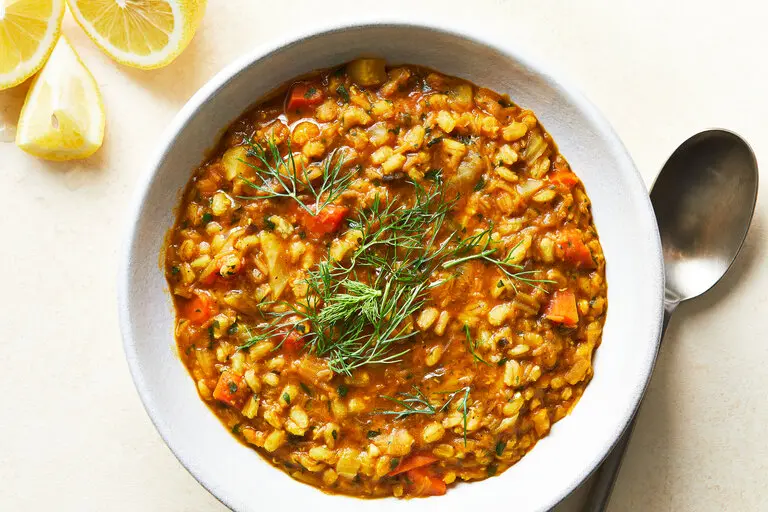

Barley and Red Lentil Curry with Chicken

Chicken, Barley & Red Lentil Curry is a rich, soul-warming dish that strikes the perfect balance between comfort food and bold flavor. Tender chunks of chicken simmer in a fragrant blend of curry spices, garlic, and ginger, nestled into a creamy base of nutty pearl barley and soft red lentils that practically melt into the sauce. And the best part? It all comes together in the pressure cooker—just a quick sauté to build flavor, then you seal the lid, walk away, and let the magic happen in under 30 minutes. Each spoonful is thick, hearty, and infused with warm aromatics—like your favorite takeout, but more satisfying and deeply homemade. Finished with a splash of coconut milk for just the right touch of silkiness, this one-pot wonder is both nourishing and craveable. Serve it up with fresh herbs, warm flatbread, or just a big spoon—it’s the kind of dish that hugs you back.
Ingredients
- 1 lb boneless, skinless chicken thighs, cut into chunks
- 3/4 cup pearl barley
- 1/2 cup red lentils (rinsed)
- 1 tbsp olive oil or ghee
- 1 medium onion, chopped
- 3 cloves garlic, minced
- 1 inch piece of ginger, grated or minced
- 2 tsp curry powder
- 1 tsp garam masala
- 1/2 tsp turmeric
- 1/4 tsp cayenne (optional)
- 1 14.5 oz can diced tomatoes
- 3 cups chickedn broth
- 1/2 cup coconut milk (optional, added after cooking)
- Salt and pepper, to taste
- Fresh cilantro or parsley (optional garnish)
Steps
- Hit sauté mode on your pressure cooker. Add olive oil, then onion. Cook 3-4 minutes till soft. Add garlic and ginger, cook 1 minute.
- Stir in curry powder, garam masala, turmeric, and cayenne. Let the spices bloom for 30 seconds.
- Add the chicken, a little salt/pepper, and stir for 2-3 minutes to lightly brown.
- Dump in barley, lentils, tomatoes, and broth. Stir well and deglaze the bottom of the pot by scraping with a wooden spoon.
- Seal the lid, cook on High Pressure for 18 minutes. Let it natural release for 10 minutes, then quick release the rest.
- Open it up, stir in coconut milk if using. Adjust salt and spice. Let it sit 5 min to thicken.
- ENJOY!
Back to Main Page